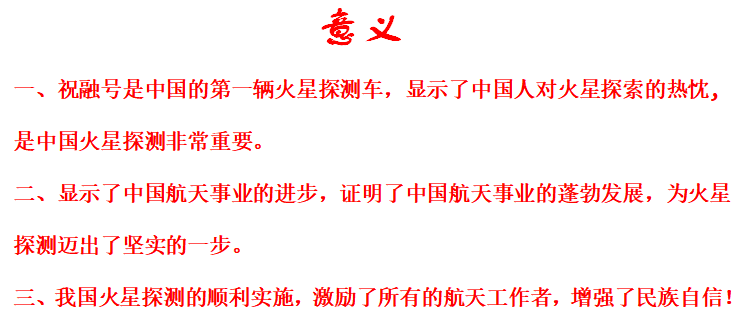
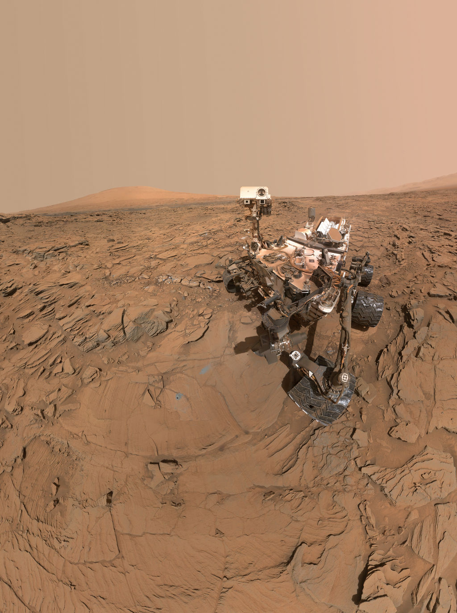

祝融号国内外评价
中国“祝融号”引发外国科学家好奇
美国《纽约时报》、澳大利亚广播公司对中国的“探火”任务进行了详细报道。
《纽约时报》对中国此次“探火”进行了系统化的介绍和梳理。其还介绍了中国的火星任务以一首经典诗歌命名为“天问”，以及火星车以中国火神“祝融”命名等细节。
《纽约时报》指出，中国已经实现了一件只有两个国家——美国和苏联做过的事情：成功登陆火星。
英国《自然》发了一篇名为《为什么中国火星探测器的着陆点让地质学家们兴奋不已》的长文，文中列举了多名科学家对于“祝融号”火星车旅程的好奇。
中国为人类知识库贡献更多力量
“天问一号”携“祝融号”成功着陆火星，标志着“中国探索太空能力的不断增强”。而中国航天领域的未来动向，也愈发受到国际关注。
美国国家航空航天局科学任务理事会向中国表示了祝贺。“与全球科学界一起，我期待着这项任务为人类了解这个红色行星将做出的重要贡献”
成功登陆火星给中国带来了巨大鼓舞，同时也证明“中国可以为人类知识库贡献更多力量。
中国的火星探测任务，代表了“建设航天强国雄心的又一个里程碑”，未来将有更多潜在的阶段性成果。有助于给未来人类的访问提供支持。中国在火星的成功着陆向世界证明，还有一个国家拥有先进的行星间空间探索能力。
逐梦火星！青科大研究团队：百炼成钢“天问一号”安全软着陆
青岛科技大学自主导航与智能控制研究所成立于2003年，是国内较早研究自主导航的高校单位，由邵巍、于镭、曹梦龙、姚文龙等老师以及研究生、博士生组成，团队规模有四五十人。各成员之间团结协作，戮力同心。
其中，于镭老师主要负责总体任务的设定和总体方案的制订；邵巍老师和曹梦龙老师主要负责自主导航算法的设计工作；姚文龙老师主要负责对控制算法以及控制设计方面进行相关的研究。
当我们抬头仰望
火星车上有着青科大的影子
“天问一号”成功着陆
这是中国人民的骄傲
更是全体青科人的骄傲
后续
祝融号火星车将依次开展
对着陆点全局成像、
自检驶离着陆平台、巡视探测等任务
祝融，祝融，继续加油！
为中国航天人加油
为青科大“火星人”点赞！
祝融号成功着陆火星，美国专家哀嚎：中国正在替代美国的领导地位
祝融号火星探测器的成功标志着中国成为了当今世界第三个有能力向火星派遣探测器的国家，
祝融号也成为了全球范围内第五辆成功登陆火星的火星探测器。
在未来的92个地球日内，这辆以中国神话中被冠以“火神”的祝融所命名的火星探测器将承载着无数国人期盼执行的一系列任务，
为将来中国航天的触角延伸到更远的深空打下基础。中国取得的成功自然也吸引到了众多外国“同行”的注意。
祝融号火星探测器成功登陆火星的消息甫一传出，美国宇航局（NASA）助理局长祖尔布琴就在社交媒体发文祝贺“祝融号”登陆火星，并称自己与全球科学界共同期待祝融号火星探测器在促进人类了解火星方面作出重要贡献。
作为航空航天领域的专家以及《争夺太空：控制地外空间资源的大国竞争》一书的作者之一，纳姆拉塔·高斯瓦米在接受《华尔街日报》的采访时表示祝融号探测器登陆火星对于中国来说是关键的一刻，这一发生在3亿公里外的事件向整个人类世界发出了一个信号，中国在太空探索这一领域已经赶上了美国，并且中国还在为了取代美国的领导地位而不断地努力。
随着中国综合实力的不断发展，中国在各个领域不断取得突破，而航天领域只是众多领域中的一个方面，正如人类航天之父康斯坦丁·齐奥尔科夫斯基所言，“地球是人类的摇篮，但人类不可能永远被束缚在摇篮里。”中国注定要走向更远更深的未来。